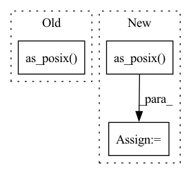

Pattern ID :4105
Before Change
fs = fsspec.filesystem("file")
dest_dataset_dict_path = dataset_dict_path
for k in json.load(
fs.open(Path(dest_dataset_dict_path, "dataset_dict.json").as_posix() , "r", encoding="utf-8")
)["splits"]:
dataset_dict_split_path = (
dataset_dict_path.split("://")[0] + "://" + Path(dest_dataset_dict_path, k).as_posix()After Change
else:
fs = fsspec.filesystem("file")
dest_dataset_dict_path = dataset_dict_path
dataset_dict_json_path = Path(dest_dataset_dict_path, config.DATASETDICT_JSON_FILENAME).as_posix()
dataset_info_path = Path(dest_dataset_dict_path, config.DATASET_INFO_FILENAME).as_posix()
if fs.isfile(dataset_info_path) and not fs.isfile(dataset_dict_json_path):
raise FileNotFoundError(
f"No such file or directory: "{dataset_dict_json_path}". Expected to load a DatasetDict object, but got a Dataset. Please use datasets.load_from_disk instead."In pattern: SUPERPATTERN
Frequency: 3
Non-data size: 3
Instances Fragment ID: 15261690
Project Name: huggingface/datasets
Commit Name: 1ea2239a6ea4ca8f4b1d314ccc7d7c2e03257b6d
Time: 2021-06-08
Author: 42851186+lhoestq@users.noreply.github.com
File Name: src/datasets/dataset_dict.py
M Class Name: DatasetDict
N Class Name: DatasetDict
M Method Name: load_from_disk(3)
N Method Name: load_from_disk(3)
M Parent Class: dict
N Parent Class: dict
M File Name: src/datasets/dataset_dict.py
N File Name: src/datasets/dataset_dict.py
M Start Line: 723
M End Line: 723
N Start Line: 721
N End Line: 729
Before Change
converted_model_path.parent.mkdir(parents=True, exist_ok=True)
with UserErrorContext():
onnx_runner = OnnxrtRunner(SessionFromOnnx(exported_model_path.as_posix() , providers=[target_device]))
with onnx_runner:
onnx_input_metadata = onnx_runner.get_input_metadata()
After Change
).as_posix()
elif framework == Framework.ONNX: // ONNX
// pytype: disable=attribute-error
input_model_path = model.as_posix()
// pytype: enable=attribute-error
else:
raise UserError(f"Unknown framework: {framework.value}")
converted_model_path = get_package_path(workdir, model_name) / self.get_output_relative_path() Fragment ID: 15261692
Project Name: triton-inference-server/model_navigator
Commit Name: 7ac1a1b6dedca92c428c29c9f408625b44d00b70
Time: 2022-04-07
Author: kkleczewski@nvidia.com
File Name: model_navigator/framework_api/commands/convert/onnx.py
M Class Name: ConvertONNX2TRT
N Class Name: ConvertONNX2TRT
M Method Name: __call__(10)
N Method Name: __call__(9)
M Parent Class: Command
N Parent Class: Command
M File Name: model_navigator/framework_api/commands/convert/onnx.py
N File Name: model_navigator/framework_api/commands/convert/onnx.py
M Start Line: 68
M End Line: 86
N Start Line: 59
N End Line: 95
Before Change
)
onnx_runner = OnnxrtRunner(
SessionFromOnnx(exported_model_path.as_posix() , providers=[self.runtime_provider.value])
)
return onnx_runnerAfter Change
).as_posix()
elif framework == Framework.ONNX:
// pytype: disable=attribute-error
onnx_model_path = model.as_posix()
// pytype: enable=attribute-error
else:
raise UserError(f"Unknown framework: {framework.value}")
Fragment ID: 15261698
Project Name: triton-inference-server/model_navigator
Commit Name: 7ac1a1b6dedca92c428c29c9f408625b44d00b70
Time: 2022-04-07
Author: kkleczewski@nvidia.com
File Name: model_navigator/framework_api/commands/performance/onnx.py
M Class Name: PerformanceONNX
N Class Name: PerformanceONNX
M Method Name: _get_runner(6)
N Method Name: _get_runner(5)
M Parent Class: PerformanceBase
N Parent Class: PerformanceBase
M File Name: model_navigator/framework_api/commands/performance/onnx.py
N File Name: model_navigator/framework_api/commands/performance/onnx.py
M Start Line: 46
M End Line: 55
N Start Line: 38
N End Line: 64